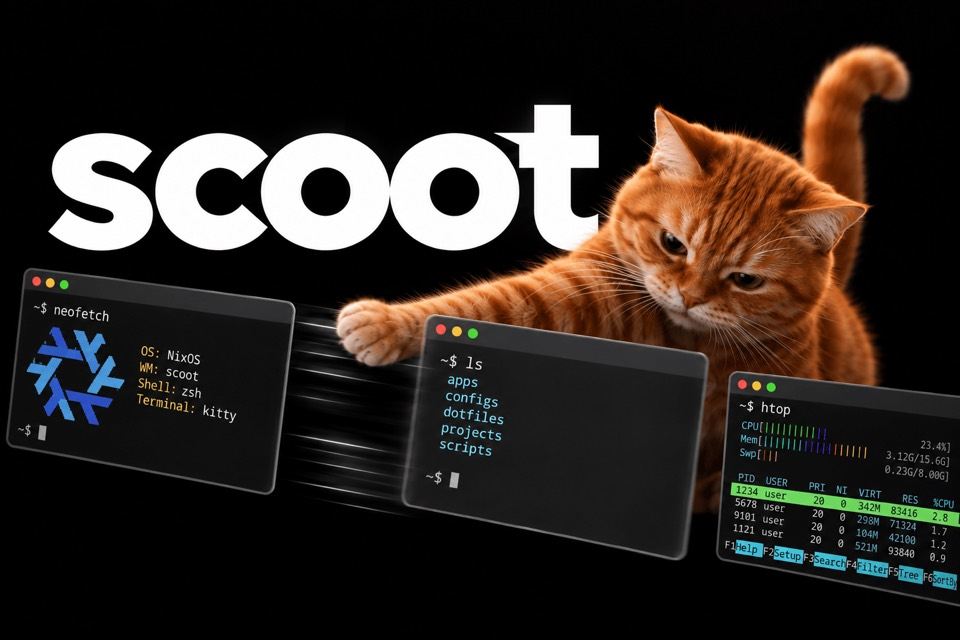

knocks your windows sideways.
A scrolling Wayland compositor that runs without a GPU.
You are in the live session. Install it to disk, or take it for a spin first.
Install scoot
Graphical install
Click the Install icon on the desktop (Calamares), pick a scoot entry on the Desktop page — one per look, moonrise selected by default — and reboot into it.
From a terminal
On this live session, the installer is already on your PATH:
The installed system boots to a ReGreet login screen — it never autologins. Your live session's autologin exists only on this ISO. The installed system also locks after 4 idle minutes (dim at 2, screens off at 5); this live session never locks or blanks, so an install is never interrupted.
Your system config
Installing puts your whole system in a flake at ~/nixos-config — a git repo you own (/etc/nixos is a symlink to it, so every guide still works). Edit it as yourself, commit, and rebuild with nh os switch (or nixos-rebuild switch --flake ~/nixos-config#scoot). Prefer a root-owned layout? Pick System-wide in /etc/nixos on the installer's Config-location page instead.
Essential keys
The full default map ships in the installed docs; these are the ones to learn first. The super key is usually the OS/Windows key.
| super + Return | Open a terminal |
| super + h j k l | Focus column left / window down / window up / column right |
| super + shift + h j k l | Move the focused column or window |
| super + r | Cycle the focused column's width |
| super + f | Toggle fullscreen |
| super + q | Close the focused window |
| super + 1 … 9 | Jump to workspace 1–9 (shift moves the window with you) |
| super + comma / period | Focus output 1 / 2 |
| super + shift + e | Quit the session |
Try it
Open windows
Press super + Return a few times: each terminal lands in a scrolling column. super + h/l scrolls between them.
Ask the compositor
Everything scriptable goes through IPC:
scoot msg --help
This session wears moonrise. The installed system can switch to music-desk, radial-burst or vinyl-sunset with one option: desktop.look = "music-desk";
Docs
On this live session, this page lives at file:///etc/scoot-welcome/index.html — reopen it anytime from the Welcome to scoot launcher or the bar's Welcome button. The installed system does not ship it (or the Welcome button): after installing, the same guides live at scoot.sh.